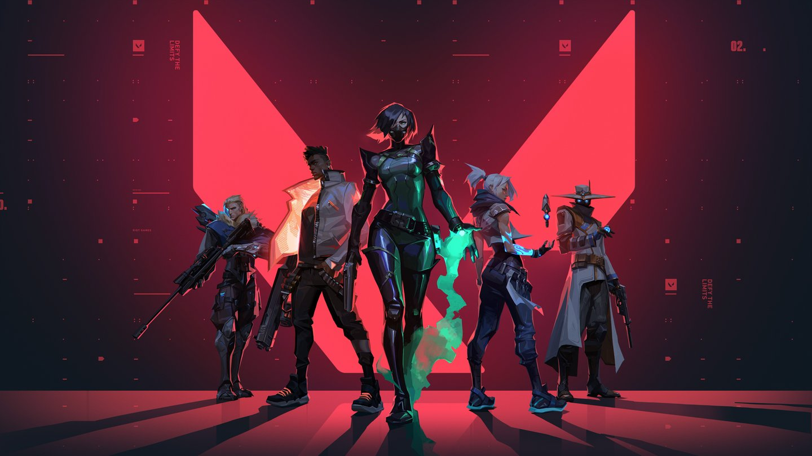
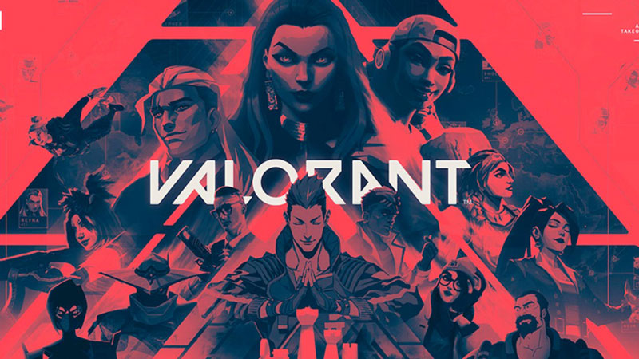

Explore o Valorant
- Agentes - Conheça os personagens jogáveis e suas habilidades únicas.
- Armas - Descubra as diferentes armas disponíveis no jogo e suas características.
- Mapas - Explore os mapas de Valorant e aprenda sobre suas estratégias.
- Modos - Saiba mais sobre os diferentes modos de jogo e como jogar cada um deles.
- Campeonatos - Fique por dentro dos campeonatos e torneios de Valorant.
O que você encontrará aqui?
- Informações sobre os agentes e suas habilidades
- Conheça as armas disponíveis no jogo
- Veja os mapas de Valorant
- Conheça os diferentes modos de jogo
- Campeonatos e jogadores profissionais
- Conheça a história e a comunidade do jogo
Não perca nenhuma notícia do Valorant
Entre na nossa comunidade e receba notícias, resultados e curiosidades sobre o jogo.